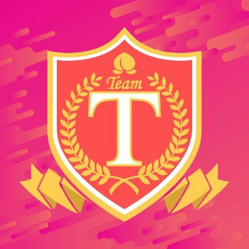

Selamat datang para wota dan woti


Kapten JKT48
Generasi 3
SKarier bersama JKT48 sendiri, Shani mengawali dengan bergabung di Tim Akagumi (Tim Merah) yang merupakan bagian dari Siswi Pelatihan dari JKT48 Generasi ke-3 sejak bulan Mei-Desember 2014. Kemudian pada Januari 2015, Shani JKT48 bergabung di Team T pada pengumuman dari JKT48 3rd Generation Trainee Event/Concert "Mulai Sekarang Sungguh-Sungguh Part 2" di Teater JKT48. Pada September 2016, Shani dipindahkan ke Team KIII pada pengumuman dari acara festival salaman dari single ke-13 JKT48. Selanjutnya pada bulan April 2017, Shani JKT48 memenangkan penghargaan sebagai peringkat pertama atau posisi tengah dalam ajang Pemilihan Senbatsu ke-4 dari JKT48 yang menggantikan Veranda sejak 2 tahun sebelumnya.
Wakil Kapten JKT48
Generasi 4
Jinan mengawali perjalanannya di JKT48 dengan menjadi member trainee pada Mei 2015. Satu tahun lebih menjadi trainee, Jinan dipromosikan menjadi member tim T pada September 2016. Kini JKT48 yang sedang mengalami restrukturisasi, dimana terjadi pengurangan member dan penghapusan tim, Jinan bergabung bersama tim JKT48 yang terdiri dari 31 member lainnya yang tersisa.
Indahnya Senyum manismu
8 Juni 2017
Single ini merupakan judul lagu terpanjang dalam sejarah industri musik Indonesia dan akan diusulkan ke MURI, Single ini terdiri dari 27 kata dalam Bahasa Indonesia. Single ini didaur ulang dari single ke-34 dari AKB48. Semua anggota Senbatsu dan Undergirls (32 anggota) terpilih melalui Pemilihan Member Single ke-17 JKT48.

Rapsodi
29 Februari 2020.
Bercerita tentang sepasang kekasih yang akhirnya menginjakkan kakinya di jenjang pernikahan. Kata Rapsodi dalam KBBI berati pernyataan kegembiraan yang berlebihan. Seperti halnya dalam momentum pernikahan dimana perasaan gembira akan sangat menggebu-gebu karena pada akhirnya bertemu dengan jodoh yang dinanti-nantikan.
Everyday, Kachuusha
7 Juli 2018
Everyday Kachuusha merupakan single ke 19 dari JKT48 sekaligus double single pertama (bersama dengan UZA) dari JKT48. Everyday Kachuusha menceritakan tentang seorang pria yang menyukai teman sekelasnya dan ingin mengajaknya untuk pergi ke pantai bersama. Lagu ini juga menceritakan tentang bagaimana cantiknya orang yang disukai ketika memakai bando/bandana (kachuusha).

Only Today
14 Maret 2023
Only Today merupakan sebuah lagu yang bercerita mengenai penyesalan seseorang atas hilangnya orang yang begitu berharga bagi dirinya karena kini telah dimiliki oleh orang lain. Maka dari itu untuk terakhir kalinya, dia ingin mengajak orang tersebut untuk menikmati senja di pinggir pantai berdua, sebelum akhirnya kembali menjadi teman biasa ketika esok hari datang.
JKT48 adalah grup idola asal Indonesia yang terbentuk pada tahun 2011. Grup ini adalah saudari dari grup idola asal Jepang, AKB48. Nama JKT48 sendiri diambil dari singkatan Jakarta, tempat di mana grup ini pertama kali dibentuk.
Grup ini beranggotakan perempuan-perempuan muda yang telah melalui proses audisi ketat dan dipilih untuk menjadi anggota JKT48. Anggota-anggota JKT48 dibagi ke dalam tiga tim (tim J, K, dan T), dan setiap tim memiliki panggung sendiri yang dipentaskan di Teater JKT48 yang berlokasi di Mal Taman Anggrek, Jakarta.
Selain pertunjukan di teater, JKT48 juga sering tampil dalam acara-acara televisi dan event-event musik. JKT48 memiliki banyak penggemar di Indonesia, dan mereka dianggap sebagai salah satu ikon budaya populer dari Indonesia.